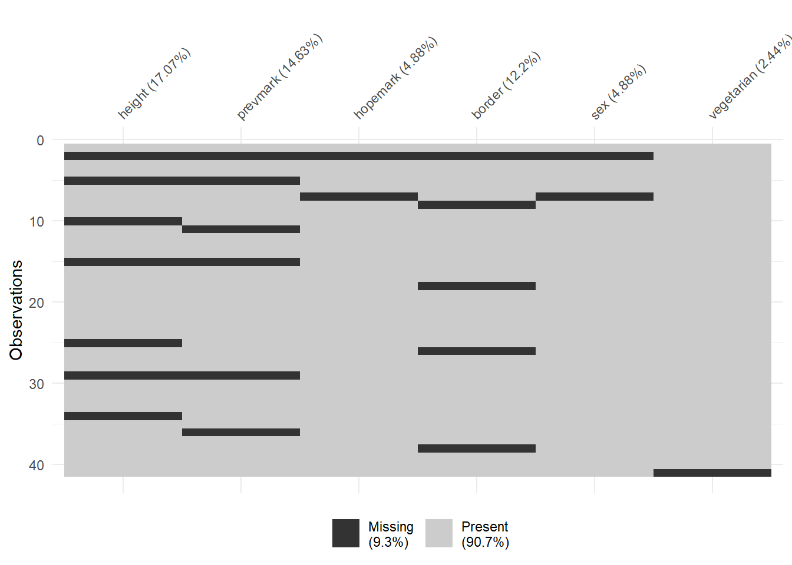
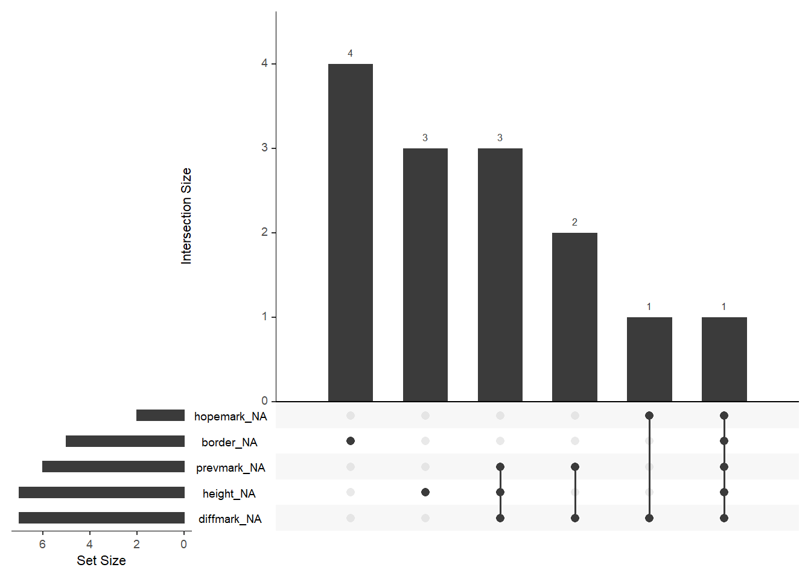

Week 1 Data Screening and Missing Values
The packages that we will use for this week’s exercises are as follows:
library(tidyverse) # For general functions
library(haven) # For importing SPSS file into R
library(table1) # For Missing Data Table
library(naniar) # Visualising missing data
library(knitr) # For general tablesPart 1: Data Exploration
Importing SPSS file into R
Importing SPSS files into R is easy with the haven package.
lab1_raw <- read_sav("data/lab1data.sav");
knitr::kable(
head(lab1_raw)
);| nicname | sex | height | border | vegitarian | prevmark | hopemark |
|---|---|---|---|---|---|---|
| crit | 2 | 150 | 1 | 1 | 85 | 95 |
| slim | NA | NA | NA | 2 | NA | NA |
| kac | 2 | 167 | 1 | 1 | 50 | 55 |
| dusty | 2 | 145 | 4 | 1 | 50 | 60 |
| princess | 2 | NA | 1 | 1 | NA | 85 |
| Bean | 1 | 189 | 3 | 1 | 80 | 80 |
Set Up Missing Values
R automatically codes missing values with the “NA” symbol. While this can make things easier when running certain analyses, it does restrict us in the sense that we cannot easily define what a specific missing value represents (for example, we are unable to distinguish a missing value that is due to a participant refusing to answer the question with a missing value that was due to the researcher forgetting to ask).
We can, however easily see how many missing values there are for each variable in our dataset:
knitr::kable(
summary(lab1_raw),
caption = "Summary of Raw Data"
);| nicname | sex | height | border | vegitarian | prevmark | hopemark | |
|---|---|---|---|---|---|---|---|
| Length:41 | Min. :1.000 | Min. :145.0 | Min. : 1.000 | Min. :1.00 | Min. :45.00 | Min. :40.00 | |
| Class :character | 1st Qu.:1.000 | 1st Qu.:155.2 | 1st Qu.: 1.000 | 1st Qu.:1.00 | 1st Qu.:63.50 | 1st Qu.:75.00 | |
| Mode :character | Median :2.000 | Median :166.0 | Median : 2.000 | Median :1.00 | Median :69.00 | Median :80.00 | |
| NA | Mean :1.615 | Mean :166.3 | Mean : 2.361 | Mean :1.15 | Mean :69.34 | Mean :78.23 | |
| NA | 3rd Qu.:2.000 | 3rd Qu.:178.0 | 3rd Qu.: 3.000 | 3rd Qu.:1.00 | 3rd Qu.:79.00 | 3rd Qu.:85.00 | |
| NA | Max. :2.000 | Max. :198.0 | Max. :10.000 | Max. :2.00 | Max. :89.00 | Max. :99.00 | |
| NA | NA’s :2 | NA’s :7 | NA’s :5 | NA’s :1 | NA’s :6 | NA’s :2 |
Modyfing the data
Insert new Variable
To create new variables inside a dataframe in R, we can use the mutate function.
lab1_mod <- lab1_raw %>%
mutate(dog = NA);And if we want to rearrange our variables so that “dog” is next to “nicname” we can do so by specifying the order of the index.
lab1_mod <- lab1_mod[,c(1,8,2:7)]
knitr::kable(
head(lab1_mod)
);| nicname | dog | sex | height | border | vegitarian | prevmark | hopemark |
|---|---|---|---|---|---|---|---|
| crit | NA | 2 | 150 | 1 | 1 | 85 | 95 |
| slim | NA | NA | NA | NA | 2 | NA | NA |
| kac | NA | 2 | 167 | 1 | 1 | 50 | 55 |
| dusty | NA | 2 | 145 | 4 | 1 | 50 | 60 |
| princess | NA | 2 | NA | 1 | 1 | NA | 85 |
| Bean | NA | 1 | 189 | 3 | 1 | 80 | 80 |
Inputting Data
Inputting data manually is not as intuitive in R as it is in SPSS as you cannot just click and edit specific entries. While this may seem cumbersome at first, it does ensure that you cannot accidentally delete or edit entries and any editting that is performed is documented (as long as you are saving the syntax).
In this case, we just need a random assortment of “True” and “False” for our dog variable. This can be achieved with the “sample” function.
set.seed(1)
lab1_mod$dog <- c(sample(c("True", "False"), 41, replace = TRUE));
head(lab1_mod)## # A tibble: 6 x 8
## nicname dog sex height border vegitarian prevmark hopemark
## <chr> <chr> <dbl+lbl> <dbl> <dbl+lbl> <dbl+lbl> <dbl> <dbl>
## 1 crit True 2 [Femal~ 150 1 [first ~ 1 [no] 85 95
## 2 slim False NA NA NA 2 [yes] NA NA
## 3 kac True 2 [Femal~ 167 1 [first ~ 1 [no] 50 55
## 4 dusty True 2 [Femal~ 145 4 1 [no] 50 60
## 5 princess False 2 [Femal~ NA 1 [first ~ 1 [no] NA 85
## 6 Bean True 1 [Male] 189 3 1 [no] 80 80And if we want to edit a specific entry, we can do so by specifying the corresponding index.
lab1_mod$dog[3] <- "FALSE"
lab1_mod$dog[3];## [1] "FALSE"Or you can use the “which” function to return the index.
lab1_mod$nicname[which(lab1_mod$nicname == "dusty")] <- "doodles"
head(lab1_mod$nicname)## [1] "crit" "slim" "kac" "doodles" "princess" "Bean"Compute new Variable
The “mutate” function makes it easy to create new variables from existing variables.
lab1_mod <- lab1_mod %>%
mutate(diffmark = prevmark - hopemark);
head(lab1_mod)## # A tibble: 6 x 9
## nicname dog sex height border vegitarian prevmark hopemark
## <chr> <chr> <dbl+lb> <dbl> <dbl+lb> <dbl+lbl> <dbl> <dbl>
## 1 crit True 2 [Fem~ 150 1 [fir~ 1 [no] 85 95
## 2 slim False NA NA NA 2 [yes] NA NA
## 3 kac FALSE 2 [Fem~ 167 1 [fir~ 1 [no] 50 55
## 4 doodles True 2 [Fem~ 145 4 1 [no] 50 60
## 5 prince~ False 2 [Fem~ NA 1 [fir~ 1 [no] NA 85
## 6 Bean True 1 [Mal~ 189 3 1 [no] 80 80
## # ... with 1 more variable: diffmark <dbl>Edit Variable name*
**This was not part of the week 1 lab, but the variable name “vegitarian” could use a little correcting!*
colnames(lab1_mod)[colnames(lab1_mod) == "vegitarian"] <- "vegetarian"
colnames(lab1_mod)## [1] "nicname" "dog" "sex" "height" "border"
## [6] "vegetarian" "prevmark" "hopemark" "diffmark"Part 2: Missing Value Analysis
Univariate Statistics
The table1 package allows us to quickly and easily see the number of missing values and their respective proportions.
table1::table1(~height + prevmark + hopemark + border + sex + vegetarian, data = lab1_mod);| Overall (N=41) |
|
|---|---|
| height in centermeters | |
| Mean (SD) | 166 (15.6) |
| Median [Min, Max] | 166 [145, 198] |
| Missing | 7 (17.1%) |
| What is your average previous mark in stats? | |
| Mean (SD) | 69.3 (11.9) |
| Median [Min, Max] | 69.0 [45.0, 89.0] |
| Missing | 6 (14.6%) |
| What is your hoped for mark in this subject? | |
| Mean (SD) | 78.2 (12.1) |
| Median [Min, Max] | 80.0 [40.0, 99.0] |
| Missing | 2 (4.9%) |
| birth order | |
| Mean (SD) | 2.36 (1.66) |
| Median [Min, Max] | 2.00 [1.00, 10.0] |
| Missing | 5 (12.2%) |
| Gender | |
| Mean (SD) | 1.62 (0.493) |
| Median [Min, Max] | 2.00 [1.00, 2.00] |
| Missing | 2 (4.9%) |
| Are you a vegetarian | |
| Mean (SD) | 1.15 (0.362) |
| Median [Min, Max] | 1.00 [1.00, 2.00] |
| Missing | 1 (2.4%) |
Separate Variance T-Tests
Unfortunately I am yet to find a simple way to perform these tests in R. If you have any ideas as to how to get an output similar to the one shown in SPSS then please feel free to add them here!
Missing and Tabulated Patterns
The naniar package provides easy to use tools to visualise the pattern of missing data in a similar way to the “Tabulated Patterns” table in SPSS.
lab1_mod %>%
select(height, prevmark, hopemark, border, sex, vegetarian) %>%
vis_miss();
gg_miss_upset(lab1_mod)
Little’s MCAR Test
Unfortunately again I was not able to find much in regards to a simple way to perform Little’s MCAR test on the missing data. The closest that I got was to this person’s github who has created a function to perform the test. I have used it below and as you can see it returns similar (but not the same) results as the test in SPSS, however I cannot vouch for the mathematical reliability of the function.
lab1_mcar <- lab1_mod %>%
select(height, prevmark, hopemark, border);
lab1_mcar <- mcar(lab1_mcar);## Iterations of EM:
## 1...2...3...4...5...6...7...8...9...10...11...12...13...14...15...16...17...18...19...20...21...
## this could take a whiledata.frame(chi_square = lab1_mcar[["chi.square"]],
df = lab1_mcar[["df"]],
p_value = lab1_mcar[["p.value"]]);## chi_square df p_value
## 1 19.41084 14 0.1498372